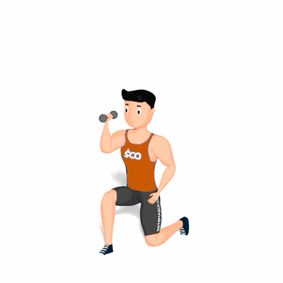

Afundo com Desenvolvimento Unilateral

É um exercício composto que irá trabalhar o fortalecimento tanto do músculos da perna quanto o dos ombros, com ênfase no quadríceps e deltoide.
Ficha Técnica
Tipo: Musculação
Grupo Muscular: Corpo
Aparelho: Nenhum
Músculos: Nenhum
Como realizar
- Com uma da mãos pegue um halter e posicione-os acima da cabeça, manter a coluna reta e abdome contraído;
- Dê um passo longo à frente com a perna oposta a mão que segura o halter, essa é a posição inicial do exercício;
- Desça o corpo flexionando o joelho em um ângulo de 90° até a coxa ficar em paralelo ao solo e ao mesmo tempo desça o halter posicionando ele ao lado de seu rosto;
- O tronco deverá descer em linha reta e o joelho não deve ultrapassar a linha dos pés;
- O joelho oposto desce até o solo acompanhando o tronco;
- Com a força das coxas, empurre o corpo e o halter para cima retornando à posição inicial;
- Repita os movimentos e o termino das repetições, troque a posição das pernas e mãos.
 RC STORE
RC STORE